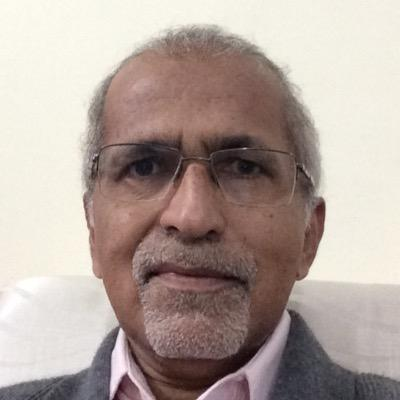

Dr. M K Radhakrishnan
Founder Director, NanoRel Technical Consultants, Singapore
Title:
VLSI – The Soul of Engineering Evolution in Electronics
Abstract:
r.M.K. Radhakrishnan is a scientist in the
area of semiconductor device physics and
failure analysis & reliability for the past four
decades, and the Founder Director of
NanoRel-Technical Consultants Singapore.
He was a scientist with Institute of
Microelectronics Singapore, Philips, ST
Microelectronics and ISRO at various senior
positions. He also served as Adjunct Professor at National
University of Singapore and visiting Professor at IISc, Bangalore.
Dr. Radhakrishnan is an IEEE EDS Distinguished Lecturer,
Member of Board of Governors of IEEE Electron Devices Society
and EDS Region 10 SRC Vice-Chair. As a researcher in the area
of device reliability physics and failure analysis, he has more than
60 research publications and two US patents. As a technical
consultant he works with different Government organizations in
India and Singapore, many MNCs in Asia and Europe and a
number of Higher Education Institutions. He is a Fellow of IETE,
Senior Member of IEEE, Member of EDFAS and ESDA